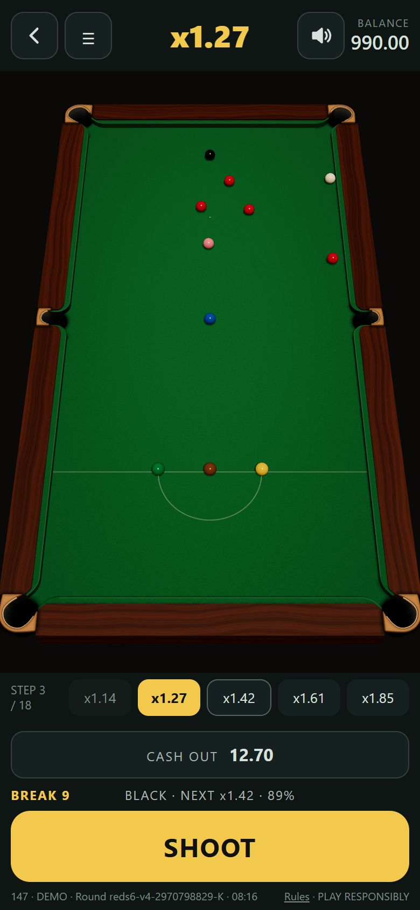
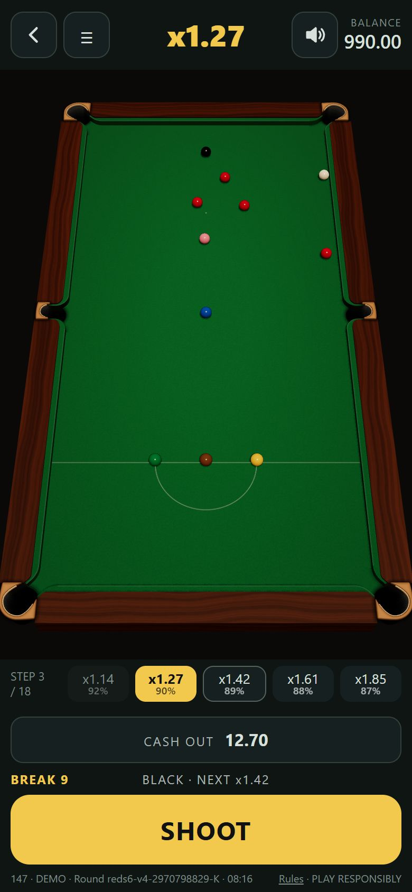
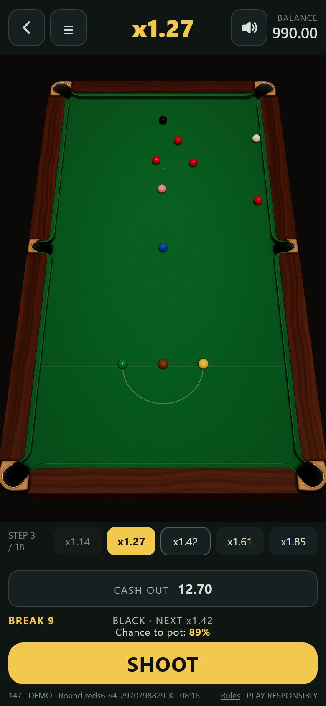

Success chance of the next shot: 4 options
Options page only: nothing in the game was changed. Each picture is the real game screen (390x844, 6 reds, round
reds6-v4-2970798829, after step 3, CASH OUT and SHOOT on screen). The chance was drawn on top by
scripts/chance-shots.mjs. The numbers are the config p of each step (the same p the game draws against),
rounded to a whole %. The next shot is step 4 (the black after a red): 89%. The chance depends only on the step,
never on the ball or where the balls lie.



For you to decide
- Which option (A, B, C or D)? Whole % (89%) or one decimal (89.4%, as in the Rules table)?
- Before step 1 (right after the break-off) the next shot is step 1: 92%. Show it there too?